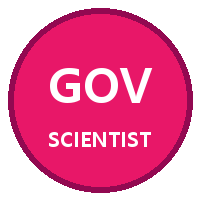
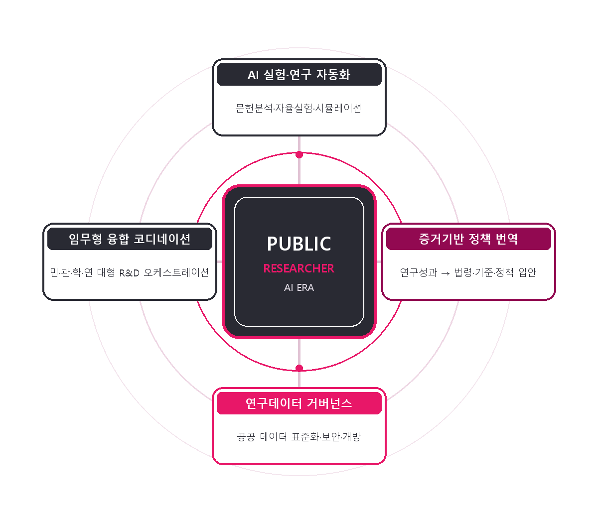
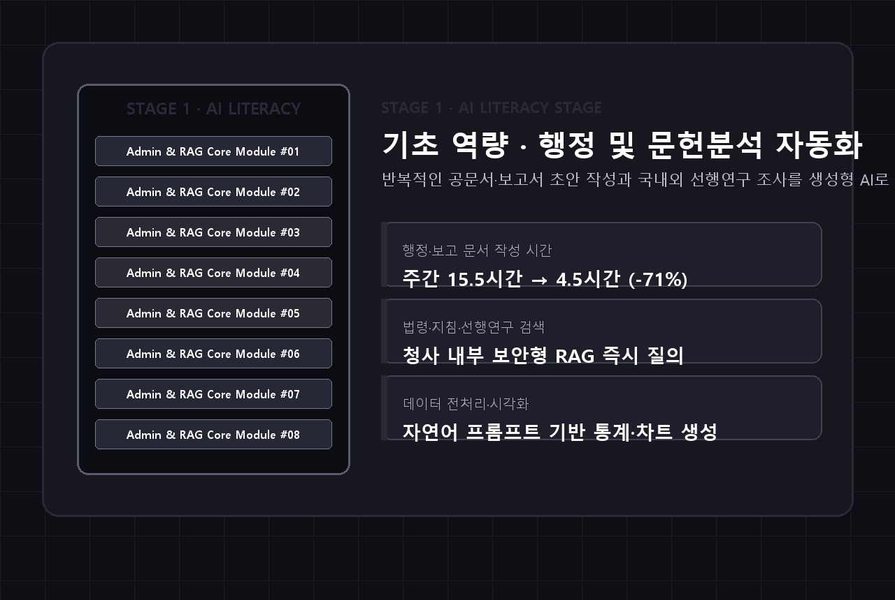
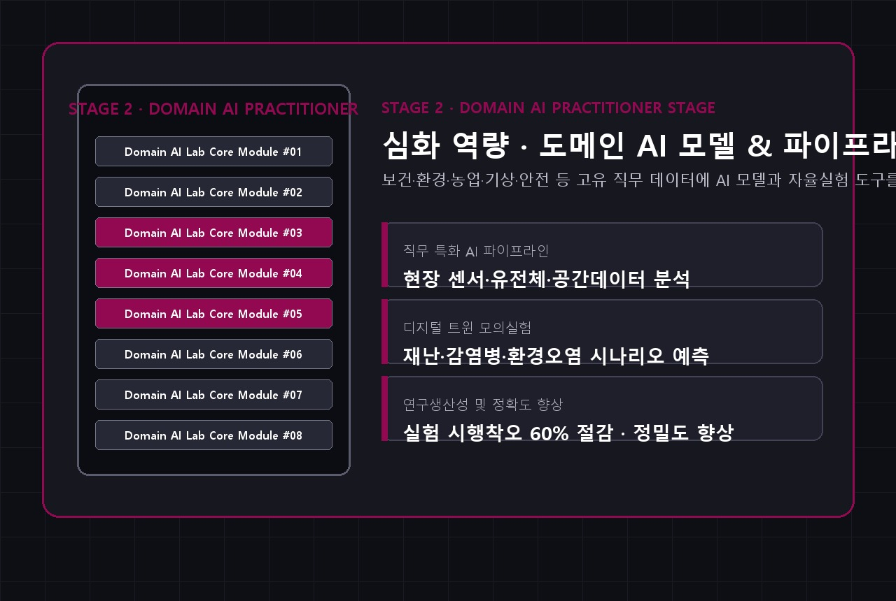
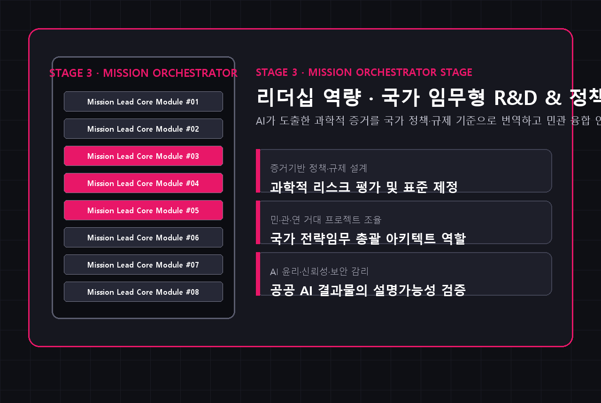
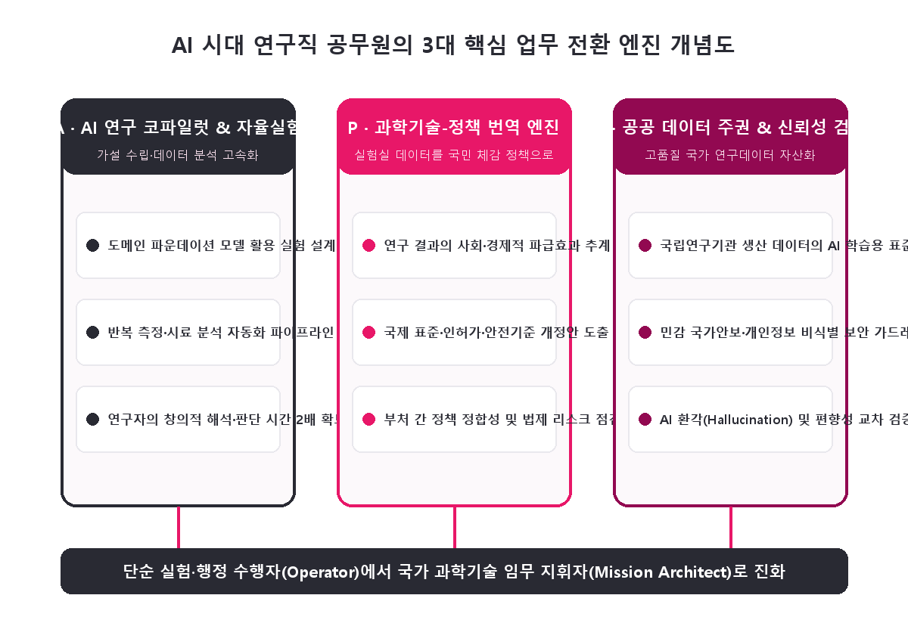
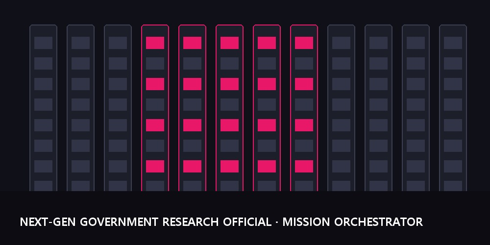

업무 재정의: ‘직접 수행’에서 ‘AI 지휘·검증·정책 번역’으로
반복 시험과 문서 초안은 AI와 자동화 장비에 위임하고, 연구직 공무원은 가설 설계·결과 검증·법령/기준치 설계에 집중하도록 직무기술서(JD)를 개편합니다.

연구직 공무원 AI 전환 · 15 SLIDESPUBLIC RESEARCHER WORK & COMPETENCY
보건·환경·농업·공업·기상·학예 연구관/사의 주 40시간 업무 구조 변화와
반드시 갖춰야 할 4대 핵심역량을 15장으로 살펴봅니다.
2페이지에서 장표 크기로 15초 모션그래픽 영상 자동 재생 · 다음 장은 직접 이동
국립·공립 연구기관 직무분석 · 공무원 AI 역량 프레임워크 기준

SCIENCEWEEKLY 40-HOUR WORK SHIFT
공문서 초안·선행문헌 정리·단순 데이터 전처리를 AI가 흡수하고, 연구직 공무원은 실험 설계와 정책 번역에 집중합니다.
업무 영역 이름이나 막대를 눌러 직무 변화 상세를 확인하세요.
주간 고부가 연구·정책 몰입 시간
주 40시간 업무 재배분 구조 보기 ↗
AI 도입 전(12.8시간) 대비 +93.8% 확대 (비중 32% → 62%)
결과보고서·규정 검토·국회/민원 기술답변 초안 작성에 쓰이던 주당 16.8시간이 6.4시간으로 줄어들어 연구 몰입도가 극대화됩니다.
직접 손으로 모든 시료를 전처리하고 보고서를 타이핑하던 실무자에서, AI와 스마트랩을 지휘하고 결과를 책임지는 리더로 바뀝니다.
출처: 인사혁신처·국가공무원인재개발원·국립연구기관 연구직 직무분석 및 생성형 AI 실증 종합 · 주 40시간 기준
THREE-YEAR WORK TRANSFORMATION
2024~2026년 추이 · 연도를 누르면 AI 일상 활용률, 주간 고부가 연구시간, 세부 직무 지표가 함께 바뀝니다.
2026년 지표 선택
2026년 AI 일상 활용률
88.0%전년 대비 +51.7%
2026년 고부가 연구시간
24.8시간전년 대비 +29.2%
국립연구기관 내부망 보안 LLM과 실험데이터 분석 AI가 전 직렬에 기본 보급됩니다.
2026년은 연구직 공무원의 88%가 문헌 조사·실험 설계·정책 시뮬레이션에 AI 에이전트를 일상적으로 활용하는 전환점입니다.
출처: 공공부문 AI 활용 실태조사 및 국립연구기관 디지털 전환 로드맵 재구성
LAB & FIELD RESPONSE OPERATIONS
시료·센서 데이터의 AI 자동 스크리닝과 실시간 확산 시뮬레이션이 국민 안전의 골든타임을 지킵니다.
현장 위기(감염병·오염·재난) 원인규명~정책권고
19시간유사 사고·판례 RAG 검색, 유해물질·병원체 확산 시뮬레이션, 법적 기준치 대조를 AI 파이프라인이 동시에 처리합니다.
연구관 1인당 월간 정밀시료·데이터세트 분석 건수
144건/월크로마토그래피·유전체·위성영상·센서 데이터의 노이즈 제거와 피크 검출을 AI가 1차 자동화하여 분석 병목을 해소합니다.
출처: 국립환경과학원·질병관리청·국립농업과학원·기상청 등 디지털 실험실·예찰 고도화 사례 종합
4 CORE COMPETENCIES FOR PUBLIC RESEARCHERS
오른쪽 4대 핵심역량 버튼을 누르면 역량별 요구 숙련도와 구체적인 행동 지표가 함께 바뀝니다.
오른쪽 핵심역량 항목을 선택하면 그래프에서 해당 역량이 강조됩니다.
연구직 공무원에게 필요한 것은 밑바닥부터 AI 코드를 짜는 것이 아니라, 해결할 행정·과학 난제를 AI가 풀 수 있는 문제로 정의하고 출력값의 물리·생물·화학적 타당성을 판별하는 능력입니다.
출처: 인사혁신처·국가공무원인재개발원 연구직 공무원 미래 역량모델링 참조
CAREER & ROLE EVOLUTION ROADMAP
단계별 아이콘이나 소제목을 누르면 아래에서 직급별(연구사·연구관) 요구 역량과 인사 지원 시트가 올라옵니다.
직무 진화 1단계 · 전통 실무형
소제목을 눌러 자세히 보기높은 전공 학위와 실험 숙련도를 보유하고도 시료 수기 전처리, 반복 측정, 공문서·결과보고서 작성에 근무시간의 68%를 소모하던 단계입니다.
전자연구노트(ELN)·표준 데이터 기록 습관화 및 내부망 AI 코파일럿 도입
AI가 고도화될수록 법적·과학적 최종 판단 책임(Human-in-the-Loop)을 지는 연구직 공무원의 도메인 전문성은 더욱 중요해집니다.
출처: 연구직 공무원 직무재설계(Job Redesign) 및 경력개발경로(CDP) 혁신안
HUMAN-AI COLLABORATION SPECS
아래의 Stage 1에서 위의 Stage 3까지 · 세로 레버를 움직이면 협업 아키텍처와 업무 속도가 바뀝니다.



Stage 1 · Co-Pilot협업 성숙도 선택
위로 올릴수록 고도화된 연구·정책 지휘
Stage 1 · AI Co-Pilot (문헌·행정 스마트화)
전 직렬 기본 역량 · 내부망 RAG 활용
국립연구기관 내부 보고서·고시·해외 논문을 RAG로 즉시 검색·요약하고, 정형 보고서와 민원 기술답변 초안을 생성해 반복 문서 작업에서 해방됩니다.
정밀 시료·데이터 분석 및 보고 완수 시간 · Stage 2 Smart Lab
실험 조건 추천(DoE)과 센서·시료 자동 스크리닝으로 분석 주기를 72% 단축합니다.
출처: 국립연구기관 AI 협업 성숙도 모델(Stage 1~3) 및 연구직 공무원 실무 가이드라인
EVERYDAY AI WORK ENGINES
오른쪽 엔진 이름을 누르면 화면 가운데에서 3단계 실무 프로토콜과 검증 체크리스트를 볼 수 있습니다.

엔진 항목 클릭 → 3단계 실무 프로토콜 팝업
베이지안 최적화로 시행착오 실험 횟수를 절반 이하로 줄이고, 분석장비·국가 관측망 스트림에서 미세 이상 징후를 실시간 탐지합니다.
출처: 국립연구기관 AI 실무 툴킷 및 과학기반 정책결정(EBPM) 운영 프로토콜
RESEARCH ADMIN & REPORTING EFFICIENCY
아래 3대 행정·보고 업무 버튼을 눌러 기존 수기 방식 대비 AI 코파일럿 협업 효과를 비교해 보세요.
연구결과 보고서 작성 시간 단축률
건당 평균 40시간 → 14시간 (26시간 절감)
AI가 실험 로그와 통계표를 요약해 초안을 만들면, 연구직 공무원은 수치 왜곡이나 과장된 인과관계를 걸러내고 정책적 함의를 다듬는 데 집중합니다.
공공 연구보고서에 생성형 AI를 활용할 때는 모든 문장과 수치가 실제 실험 로그나 법령·논문 원문에 링크되도록 인용 검증을 의무화합니다.
출처: 공공 연구기관 생성형 AI 코파일럿 시범 운영 및 문서 행정 시간 절감 효과 측정
DOMAIN-SPECIFIC AI TRANSFORMATION
오른쪽 3대 직렬군을 선택하면 각 직렬의 AI 업무 혁신 포인트와 요구 역량 수준을 볼 수 있습니다.
오른쪽 직렬군을 눌러 직렬별 특화 AI 업무와 필수 역량을 확인하세요.
병원체 전장유전체 변이 조기 탐지, 신종 화학물질·마약류의 인실리코(In-silico) 독성 예측, 백신·치료제 후보 스크리닝을 지휘하며 바이오 데이터 보안·윤리 역량이 필수적입니다.
출처: 질병관리청·식품의약품안전처·국립환경과학원·기상청·농촌진흥청·국립문화유산연구원 직렬별 디지털 전환 사례
SMART NATIONAL LAB & TALENT PIPELINE
연구직 공무원의 역량이 현장에서 발휘되도록 AI-LIMS 실험실 환경과 체계적인 교육·인증 트랙을 결합합니다.
수기 연구노트와 개별 PC 엑셀 파일로 흩어지던 시험·관측 데이터를 LIMS(실험실정보관리시스템)에 자동 적재하고, 기관 간 호환되는 표준 메타데이터로 관리하는 기본 역량입니다.
2028년까지 핵심 국공립 실험실 85% 스마트화 및 연구직 공무원 92% AI 역량 인증 달성을 목표로 합니다.
출처: 국가공무원인재개발원 과학기술·AI 교육 혁신방안 및 스마트 국립연구실 구축 로드맵
HR & ORGANIZATION INNOVATION WATCH
개인의 학습 노력을 넘어
인사평가·보상·실험실 인프라 혁신이 함께 뒷받침되어야 합니다.

반복 시험과 문서 초안은 AI와 자동화 장비에 위임하고, 연구직 공무원은 가설 설계·결과 검증·법령/기준치 설계에 집중하도록 직무기술서(JD)를 개편합니다.
단순 논문·시험 건수 위주 평가를 넘어, 기관 공용 AI-Ready 데이터셋 구축과 도메인 AI 워크플로 개발 성과를 승진·성과급에 정식 반영합니다.
보안 우려로 AI 활용을 주저하지 않도록 폐쇄망에서도 최신 과학 파운데이션 모델과 RAG를 마음껏 실험할 수 있는 전용 인프라를 제공합니다.
발표자의 핵심 메시지 · 과학적 진실을 꿰뚫는 도메인 안목 + AI 오케스트레이션 리더십
근거: 인사혁신처·국가공무원인재개발원·과기정통부·OECD Public Sector AI Skills 프레임워크 종합
PUBLIC RESEARCHER VISION FILM
PUBLIC RESEARCHER AI BRIEFING
상단 '글자 편집' 버튼을 눌러 소속 연구기관명·직렬·목표 수치를 브라우저에서 즉시 수정하고,
모션그래픽 영상까지 포함된 단일 HTML 파일로 저장해 교육·보고에 활용할 수 있습니다.
AI 시대의 연구직 공무원의 업무변화와 핵심역량 · 15 SLIDES